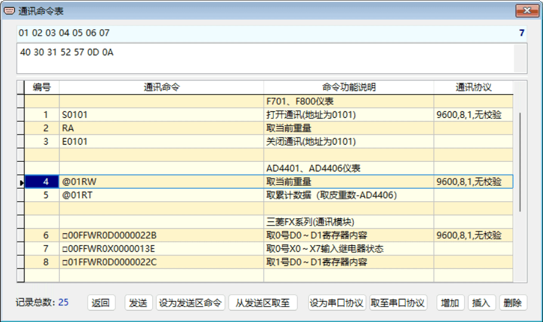

通讯命令表操作
在主界面中点击【通讯命令表】，将弹出下面的“通讯命令表 ”窗口。
有了 RS232 Tool 提供的通讯命令表记录，将极大方便使用串口对智能仪表或 PLC 进行通讯检测、程序调试等工作。用户可先在通讯命令表中添加、编辑、测试好所需的各种通讯命令、通讯协议，以后就可以直接及重复使用了，日积月累，指令表中的通讯命令越来越多，调试、检测及维护等工作也将变得越来越轻松。
如果需要使用新版本或重新安装等，用户的通讯命令表还可通过文件菜单中的“导入与导出数据”功能，进行保存、恢复、拷贝、分享等。
窗口中表格的每一行记录，显示已保存的一条通讯命令、说明及其相应的通讯协议，可以直接进行修改、输入或粘贴等操作，在表格中点击鼠标右键可弹出快捷菜单操作。
在窗口上部的十六进制编辑区中，固定以十六进制显示表中当前行的通讯命令字符串内容，可直接对编辑区中的该条命令进行编辑、修改。对于那些不能在表格中显示与输入的特殊ASCII码字符，即可在此编辑处理。输入或修改内容后，可按回车健结束。
十六进制编辑区上方的数字标尺，便于准确定位编辑区中通讯命令字符串各字符的位置。
通讯命令表操作的一般步骤
1. 在表格中选择一条相应的通讯命令，若没有所需则应先【增加】或【插入】新的通讯命令；
2. 若与所需命令不同，则可对其进行修改；
3. 点击【设为发送区命令】，将主界面发送区中内容替换为所选择的通讯命令；
4. 点击【设为串口协议】，将主界面中的串口当前通讯协议替换为所选择命令的通讯协议；
5. 操作完毕返回主界面。也可以点击【发送】，直接就发送出去所选命令进行通讯测试。
